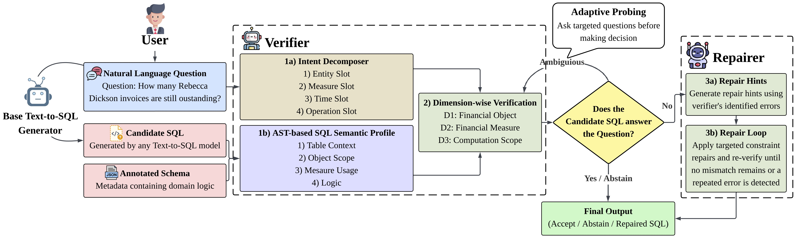

|
Deacon Koh I am a final-year Applied Computing (Fintech) undergraduate at Singapore Institute of Technology (SIT). Currently, I am a Research Intern at A*STAR IAIC, where I work on Text-to-SQL research, supervised by Dr. Ranjan Satapathy. Concurrently, I serve as an Undergraduate Research Assistant at SIT, working with Dr. Zhang Wei and Dr. Liu Fang on Multi-Objective Flexible Job Shop Scheduling using deep reinforcement learning. |
News
| Sep 2026 | Started as a Research Assistant at SIT, assisting Dr. Zhang Wei & Dr. Liu Fang on Multi-Objective Flexible Job Shop Scheduling using a dual-attention deep reinforcement learning approach. |
| Aug 2026 | Submitted paper on Accounting Diagnosis and Repair (ADiR) to International Conference on AI in Finance (ICAIF), 2026. |
Publications
|
 |
Accounting Diagnosis and Repair (ADiR): A Post-Generation
Framework for Accounting-Semantic Reasoning in Text-to-SQL
Deacon Koh, Ranjan Satapathy, Song Yuting, Thorsten Neumann Submitted to International Conference on AI in Finance (ICAIF), 2026 paper / code Grounding Financial Text-to-SQL post-generation verification and repair using a shared reasoning framework derived from formal accounting invariants (GAAP/IFRS) to eliminate silent logic drift. |
|
?
|
[Second publication title]
[Authors] [Venue / year] paper / code [One or two sentences describing the paper's main contribution.] |